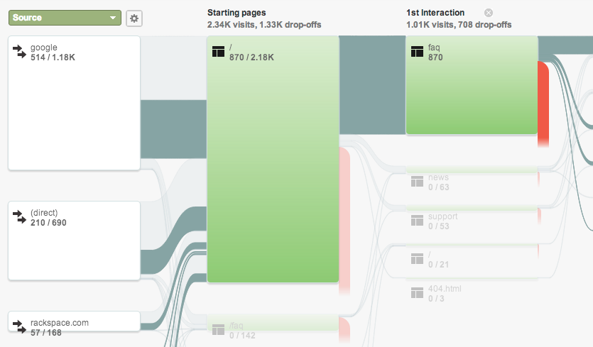

Austomated Frontend Testing
Or: How to Automate the Process of detecting when you Break Things
Chris Ruppel
frontend dev @ Four Kitchens
(we're hiring!)
I contribute and present about open source:
Differences from server-side testing
None: if you're familiar with server-side testing, this is not new.
However, since frontend is a different game than backend, its operational needs are slightly different.
Often, a PHP error results in a 500 or
blank page. You either get HTML or not.
(or you can at least use XHProf)
There are untold number of subtle
errors that can occur on the frontend.
- Minor CSS changes that throw things off
- Changes to JS files that break things
- Aggregates changing when not necessary
- Performance regressions
Additionally, frontend development is
becoming more critical as the trade matures.
We need the same testing abilities
that the backend has had for years.
- Testing page load times
- Testing render speeds
- Sticking to a performance budget
- Accountability for code changes
workflow_alter()
In order to deliver the best, fastest site possible, we have to change our development processes.
Performance is not a checklist, it's a— Ilya Grigorik
continuous process.
…don’t take measures without measuring them.
— Maximiliano Firtman
YES
The slides AND code are on GitHub, I will tweet the link, and it's already available on the session page of the DrupalCon site. Yes, you may take code from the slides and use it for any purpose :)
This presentation is using a fresh clone of these slides, using the many examples I provided in the repo.
Performance Testing
Automating YSlow
YSlow is a service that grades frontend performance based on many tried and true facets. Developed at Yahoo! when they were the kings of perf.
It delivers A-F on the various tests, but historically required the user to visit each page in a browser.
# capture a HAR file from the CLI
$ phantomjs examples/netsniff.js http://example.com/ > ex.har
# install/run YSlow on the waterfall (node.js)
$ npm install yslow -g
$ yslow --info basic --format plain ex.har
# Full grade report of FK website, all in one line
$ phantomjs examples/netsniff.js http://fourkitchens.com | yslow --info grade --format plain
YSlow also has a phantomjs package
Automating PageSpeed
Not to be outdone by Yahoo, Google has a
competing service called PageSpeed Insights.
It can also be automated, by getting an API key.
Or signing up for PageSpeed service.
grunt-pagespeed
PageSpeed API is documented quite
thoroughly, but there's also a grunt plugin.
# examples/grunt/pagespeed
$ npm install
$ grunt # runs default task
$ grunt pagespeed:mobile # runs mobile taskView code on GitHub
Phantomas
Phantomas is a PhantomJS-based
web performance metrics tool
It gives you loads of data about how the
frontend of your website is performing.
The usage guide is extensive.
# install via npm
$ npm install -g phantomas
# run a basic report
$ phantomas --url http://example.com
# set viewport dimensions, generate images of rendering process
$ phantomas --url http://example.com --viewport=320x480 --film-strip
# assert a test for total number of requests
$ phantomas --url http://example.com --assert-requests=20
grunt-phantomas
The grunt plugin is not just
a wrapper for running the tool.
It makes reporting trends easier
with charts that update each
time you run the grunt task
# examples/grunt/phantomas
$ npm install
# run report
$ grunt phantomas:default
# run report and generate screenshot
$ grunt phantomas:screenshot
# test for certain values. this might cause failure!
$ grunt phantomas:requests
View code on GitHub
CSS Regression testing
CSS regressions? say it ain't so!
Having no scope at all, CSS is the easiest thing to nudge out of place. It's easier to prevent than you think.
Wraith
Wraith uses either Phantom or Slimer (your choice) to take screenshots of two environments, producing a visual diff of the two screenshots!

Basic usage of Wraith
# examples/wraith
$ ./install.sh
$ cd wraith
$ rake # runs their example against bbc.co.uk
$ open shots/gallery.html # view results in the browserMultiple tests
Wraith handles one comparison per config file.
However, it has support for multiple configs, so several config files in one repo allows for multiple comparisons.
$ cd /path/to/wraith/configs
$ rake config[homepage]
$ rake config[dashboard]Setting up prerender
Prerender is relatively new, and lets you
pre-load whole pages before a user clicks.
Since it's a heavy-handed but super-useful optimization, you MUST make sure it is only used in situations where it's absolutely appropriate.
Google Analytics — Audience » Visitors Flow
..or you can automate the hunt!
# examples/prerender
$ ruby report.rb login@gmail.com password UA-XXXXXX-YQA and Testing
Testing in loads of browsers is a
necessary but tedious task.
Services like BrowserStack.com
make testing much simpler.
Automating Tasks with CI
The Basics
Everything outlined in this section
requires two key ingredients:
- Continuous integration (CI)
- Git hooks
Four Kitchens uses Jenkins and GitHub WebHooks
in our workflow, and you can use whatever you wish.
Trigger Jenkins builds
by pushing to GitHub
An oldie but goodie: check out our how-to from 2011
- You push to GitHub master branch (or merge PR)
- GitHub sends a message to your CI server
- "Yo Jenkins, the repository was updated!"
- CI server pulls the new code to your staging area
Although fairly mundane in terms of CI, the blog post illustrates the basic concepts underlying all of the tasks involving Jenkins.
Further reading
Questions?
Contact me:
chris ❀ fourkitchens.com